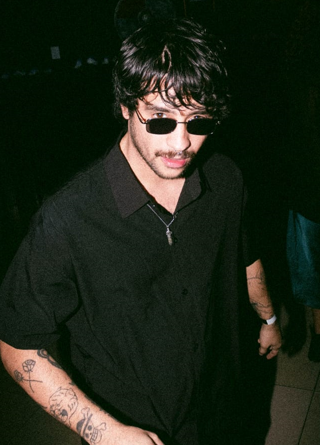
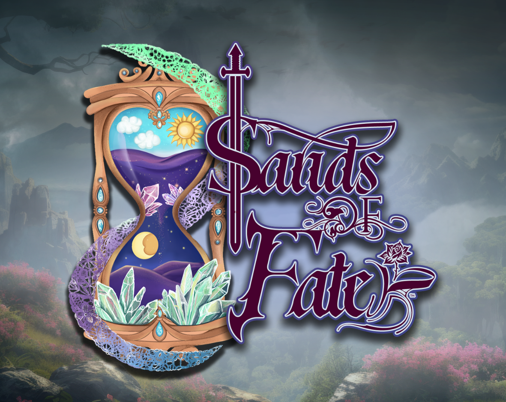
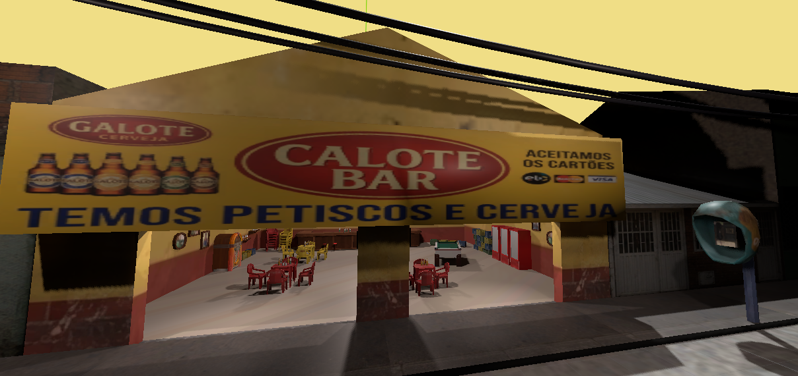
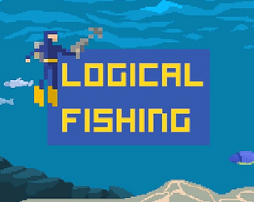
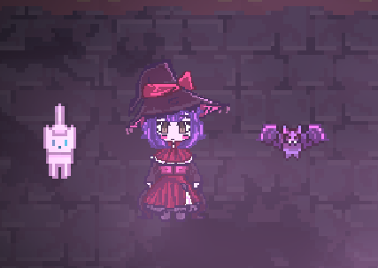
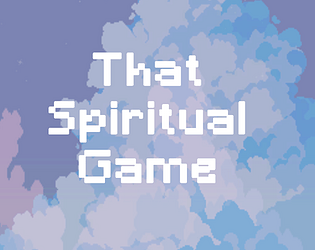

Dedicando minha vida a criar histórias através de mecânicas divertidas, explorando ideias e concepts artisticos originais.

Desenvolvedor de jogos, Game Designer e Instrutor de programação com 2+ anos de experiência e apaixonado pelo poder transformador da tecnologia e da arte.
Minha trajetória traz uma sólida atuação prática no desenvolvimento de jogos e na criação de protótipos em engines como Unity, Unreal Engine e Godot aplicando linguagens como C#, Blueprints e GDScript para estruturar mecânicas intuitivas e gameplays envolventes para contar histórias. Possuo também conhecimento em Desenvolvimento Web e aplicações com utilização de frameworks e banco de dados.
Graduado em Análise e Desenvolvimento de Sistemas, também leciono programação e desenvolvimento de jogos para crianças e adolescentes fortalecendo minha capacidade de comunicação, empatia e didática.Somando à minha paixão pela arte e design, fundamenta minha visão de que criar jogos é unir técnica, expressão artística e propósito para inspirar pessoas.

MMORPG Sandbox na qual participo na criação de sistemas através de blueprints pela Clever Ghoul Studio.
RPG · MMO · 2026
Projeto independente nascido de uma Game Jam com um time atual composto por programadores e artistas.
Simulador · 2026
Projeto desenvolvido solo com temática educacional para projeto final da Faculdade.
Educacional · Aventura · 2025
Projeto colaborativo ainda em desenvolvimento.
Puzzle · Terror · 2025
Projeto desenvolvimento solo para uma participação de Game Jam.
Puzzle · 2025Desenvolvendo sistemas com trajetória direcionada às demandas de produção de um RPG MMO sandbox, exigindo domínio de arquitetura escalável, sistemas interligados (gameplay, interface, persistência de dados) e capacidade de sustentar consistência técnica em um escopo grande e em constante expansão. Atuação envolve tanto a criação de novas funcionalidades quanto a resolução de problemas em sistemas já existentes, sempre equilibrando performance, manutenibilidade e experiência do jogador.
Planejo e ministro aulas de programação adaptadas à faixa etária dos alunos ensinando lógica de programação e conceitos fundamentais através de ferramentas como Engines (Game Maker,Unity, Scratch entre outras) e linguagens visuais/iniciantes. Acompanho a evolução dos alunos, oferecendo suporte individualizado quando necessário mantendo um ambiente de aula acolhedor, dinâmico e estimulante.
Desenvolvimento de jogos em C# com foco em orientação a objetos. Uso de interfaces e composição de componentes separando dados de configuração da lógica de gameplay.Participação em game jams com prototipagem de jogo jogável em prazo curto, atuando em programação e design de sistemas dentro de equipe pequena ou solo.
No inicio da minha jornada comecei através do desenvolvimento web estudando as principais linguagens de programação do mercado utilizando focando o front-end através do framework ReactJS. Aprendi conceitos básicos de banco de dados e integrações de API para melhor entendimento de conceitos iniciais do desenvolvimento. Nesse processo realizei a criação de alguns projetos autorais e cheguei a fazer partes de alguns freelancers. Apesar de não focar totalmente nessa parte ainda continuei em paralelo aprimorando esse conhecimentos para me manter atualizado no mercado até os dias atuais.